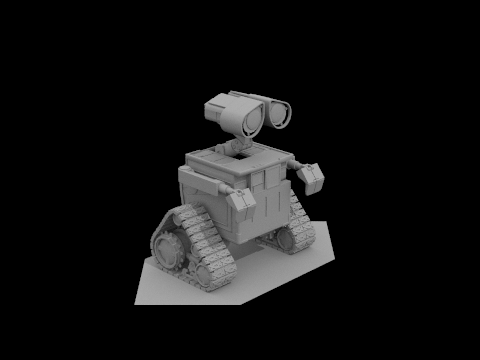
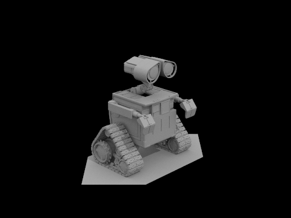

This project involves coding a raytracer from scratch, implementing ray generation, triangle intersection, and shading. I enjoyed this project as it includes a good amount of both theory (optics/physics) and practice (datastructures and statistical methods) to produce realistic images in a reasonable amount of time.
Ray Generation and Scene Intersection
To render a raytraced scene, we first need to generate the sampling rays starting at origin and passing through the sensor (screen). We define image space as unit square where $(0,0)$ is bottom left and $(1,1)$ is top right. Our function maps these image coordinates into camera space such that $(\mp\tan(\text{hFov}/2),\mp\tan(\text{vFov}/2),-1)$ correspond to bottom left/top right corners (read as minus/plus). The $-1$ comes from clamping the virtual camera sensor to be at $z=-1$ in camera space. The docs have a nice diagram of this mapping. We then transform these camera space coordinates into world space by multiplying with the aptly named c2w (camera-to-world) matrix. Adding this to the cameras position (given in world coords) gives us the ray.
{kind=link}
To actually render the image to the $h\times w$ canvas, we sample each pixel a number of times and average the results. This involves generating samples by adding uniform noise (over $[0,1]^2$) to the pixel coordinates $(x,y)$ then normalizing by the screen dimensions. With these rays, we sample by shooting them into the scene and checking if they hit anything-- this motivates the next section, figuring out if a ray intersects with a triangle (which compose object meshes, see project 2).
Ray-Triangle intersection can be done using the Möller-Trumbore algorithm; really it's a optimized, closed form solution to the system of equations -- by using Cramer's rule, it solves for the $t$ at which the ray intersects the triangle's normal plane and the corresponding barycentric coordinates of the point on the plane. An intersection hits (is inside) the triangle iff these barycentric coordinates are in the range $[0,1]$.

Bounding Volume Hierarchy
When rendering a scene, it is not practical to check every triangle in the scene for if it intersects with the ray; $\mathcal O (n)$. This motivates a Bounding Volume Hierarchy to organize the triangles spatially into a tree structure, enabling intersection checks to recursively cull the portions of the scene that the ray is guaranteed to not intersect; $\mathcal O(\log n)$.
When BVH is constructor is called, it begins by iterating over all triangles in the scene to calculate the bounding box and average centroid. If we have more triangles than max_leaf_size, we partition them about the average centroid; specifically, w.r.t. the distance along the axis corresponding to the maximum side length of the bounding box. Assuming this doesn't place all the elements in one child, we recurse on the left and right partitions to build the tree. In practice, this relatively simple heuristic of splitting about the longest axis by the mean allows us to render vastly more complex geometry:
Below is the performance of the raytracer with and without BVH acceleration across two simple and four complex scenes. You can see that render times go from an upper bound of minutes down to less than a tenth of a second1. Because the BVH culling is able to alleviate most objects before checking for intersection, this average is significantly reduced and is no longer driven by primitive count (rather, the scene geometry).
| Scene | Primitives | Render time (sec.) | Avg. intersection tests/ray | ||
|---|---|---|---|---|---|
| no BVH | BVH | no BVH | BVH | ||
banana.dae |
2,458 | 2.9669 | 0.0683 | 97.519262 | 0.936767 |
cow.dae |
5,856 | 11.9519 | 0.0669 | 403.385148 | 2.232791 |
beast.dae |
64,618 | 230.4352 | 0.0651 | 9,040.458066 | 1.970359 |
CBlucy.dae |
133,796 | 395.7894 | 0.0746 | 12,089.390699 | 1.940943 |
dragon.dae |
105,120 | 234.7619 | 0.0788 | 10,386.453012 | 2.618788 |
maxplanck.dae |
50,801 | 147.5124 | 0.0980 | 5,938.841550 | 3.333972 |
1: For reference, these are times rendering with 8 threads on my Thinkpad P14s laptop.
Direct Illumination
Direct illumination is the contribution of illumination from rays that originate directly from a light source. This involves zero-bounce illumination. i.e. light coming directly from a light source, as well as one-bounce illumination, i.e. the rays emitting from a light source that bounce off a surface before reaching the virtual camera. We model this by shooting a ray from our camera into the scene, and sampling rays from the point of intersection -- if they hit a light source, we add the contribution to the pixel. Mathematically, we model this light transportation with the rendering equation: $$L_r(p,\omega_r) = \int f_r(p, \omega_i \to \omega_r) L_i (p, \omega_i) \cos \theta_i \ \mathrm d \omega_i \approx \frac 1 N \sum_{j=1}^N f_r(p, \omega_j \to \omega_r) L_i (p, \omega_j) \cos \theta_j \frac 1 {p(\omega_j)}$$ where $f_r(p, \omega_j \to \omega_r)$ is the BSDF (a material property) at the initial intersection point (given the incident and reflected rays), $L_i (p, \omega_j)$ is the incident (for now, zero-bounce) light at the sample point, and $\cos \theta_i$ is the angle between the normal and the sample ray (see Lambert's cosine law).
Since this integral is intractable, we use Monte Carlo integration to obtain an unbiased estimator. The integral is approximated by summing over a $N$umber of samples $\omega_j \sim p(\cdot)$, where the $p$robability density function can be uniform or importance sampled.
Hemisphere
We uniformly sample num_samples rays from the hemisphere about the normal at the point of intersection; as such, $p(\omega_i) = 1/{2\pi}$ (inverse surface area of hemisphere). This naive method will produce many rays that--by chance--don't hit anything, leading to high-variance, noisy results. A key implementation details is setting the bounce ray's minimum time to EPS_D=$1\mathrm{e-}11$ to prevent self-intersection arising from numerical precision errors.
Importance
Importance sampling casts rays directly towards lights. For point lights, we only need to sample once; otherwise, we sample points on the light's surface proportional to ns_area_light. Importantly, I hugged the $\cos$ term in $\text{ReLU}$ to prevent rays from being cast from the backside of the surface (i.e. rays with negative $z$).

 

As shown above, the naive hemisphere sampling produces a more grainy bunny rendering. Moreover, scenes with no area lights (e.g. Wall-E) are unable to be lit with hemisphere sampling as we almost surely will never sample a ray that happens to intersect with any point light. In contrast, importance sampling handles this just fine as it considers vector from surface to point-light and checks if it's unobstructed (and positive $z$ w.r.t. surface normal). This 'reverse' approach has far less variance and, as such, converges quickly to a cleaner image.
To the left is a visualization showing how increasing $\ell$, the factor of samples we take per unit of light-area, reduces noise in importance sampling. Intuitively, as we take more samples the locations we consider become more representative of the light's true distribution/shape, and as such, the variance of our estimator decreases.
Global Illumination
Indirect illumination is the contribution of light that has bounced off surfaces in the scene. Before, we considered zero and one-bounce sampling -- now we consider $m>1$ which we model recursively: an $m$-bounce sample is the result of the one-bounce sample at this point plus the the $m-1$-bounce sample from a new sample point.
Now the images no longer have dark shadows and the ceiling is no longer black -- light is now able to bounce off the walls/floor to illuminate shadows/ceiling.
To the left is shown indirect illumination, e.g. all bounces other than $m=1$. Notice how, compared to the direct illumination ($\ell$ figures above, of prior section), there are no deep shadows and we can faintly see shadows cast by the spheres on the wall.
Below we show how the $m$-th bounce of light contributes to the rendered image. The top row shows accumulating bounces, and the bottom shows the bounce at depth $m$. For $m=2$, we see the ceiling is now illuminated by the light bouncing off the floor which also illuminates the bottom of the bunny. For $m=3$, we see the light begins to become more evenly distributed across the scene and the shadows are less pronounced. This darkening trend continues as $m$ increases as rays shoot off into the void / dissipate into materials.
Accumulate
Depth
Below are renders with both direct and indirect illumination.
Russian Roulette
Our choice of $m$ can seem somewhat arbitrary. One way to address this is 'Russian Roulette' where we terminate rays with a set probability $p = 0.35$ making $m$ the maximum depth. Accordingly, we must scale our contribution by $1/p$ to ensure our estimator remains unbiased. Below we show how the rendered image changes as we increase the $m$aximum depth. I've excluded $m=0$ as the zero-bounce image remains the same.
As we can see, the renders appear just as good at a distance but there is apparent graininess visible zoomed in. The bunny was rendered at $s=1024$; the noise is more pronounced as we decrease the number of $s$amples-per-pixel:
Adaptive Sampling
Instead of having a constant probability of termination, adaptive sampling uses a statistics heuristic to halt early if a pixel's illumination variance is below a threshold. This is done by keeping a running average and variance of a pixel's samples and checking every samplesPerBatch if $1.96 \cdot \sqrt{ {\sigma^2}/ n} \le \texttt{maxTolerance} \cdot \mu$. Intuitively, the left term is small (i.e. we may converge) if variance is small or samples $n$ is large. Statistically, our heuristic is based the $z$-score for a 95% confidence interval (giving rise to magic number $1.96$); we default maxTolerance to $0.05$, corresponding to a 5% error.
Adaptive sampling rates are visualized below as a heat map. Colder corresponds to converging quicker, using less bounces, (ironically) accelerating render time.